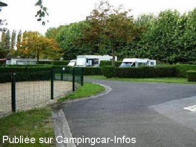

ACS = Aire de services sur camping acceptant le passage pour les services de :
ATTICHY
(N° 280)
Accès/adresse :
22 rue Fontaine Aubier
Camping de l'Aigrette ***
60350 ATTICHY
Camping de l'Aigrette ***
60350 ATTICHY
Latitude : (Nord) 49.40696° Décimaux ou 49° 24′ 25′′
Longitude : (Est) 3.05301° Décimaux ou 3° 3′ 10′′
Tarif : 2014
Forfait stop accueil, arrivée entre 18 et 20 H : 8 €
C-C, 2 personnes : 11 €
Personne + 7 ans : 1 €
Électricité 10 A : 2 €
Sanitaires : 2 €
Taxe de séjour + 13 ans : 0,40 €
Lave-linge : 3 €
Services C-C de passage : 4 €
Type de borne : RACLET
Services :


Accès handicapés
Lave-linge
Piscine
Autres informations :
Ouvert du 01/03 au 30/11
51 emplacements
Tél : +33(0)344 421 597
contact@campingdelaigrette.com
http://www.campingdelaigrette.com/

Le 08/10/2012 par YN 14
de
Walker Philippe
le 17/06/2013 :
§ Avons passé le week end du 15 juin 2013. Excellent accueil! Bel endroit, aires bien délimitées, Patron très serviable!
Nous y reviendrons!
Tarif: première nuit 10.80 €, électricité et taxe de séjour inclus, puis 13.80€ pour la seconde nuit.
§ Avons passé le week end du 15 juin 2013. Excellent accueil! Bel endroit, aires bien délimitées, Patron très serviable!
Nous y reviendrons!
Tarif: première nuit 10.80 €, électricité et taxe de séjour inclus, puis 13.80€ pour la seconde nuit.
de
nedelec
le 05/10/2012 :
forfait 17.50euros certes un peu cher mais dans un beau cadre et grands emplacements de 120m2 entourés de haies de 1.50m de haut
forfait 17.50euros certes un peu cher mais dans un beau cadre et grands emplacements de 120m2 entourés de haies de 1.50m de haut
de
chantal et jack
le 22/12/2009 :
Camping ouvert, bonne chose. Tarif pour 2 personnes avec électricité, douches chaudes, services = 12,70€. Alors que dire ? Que le coin est au bord d'un étang et que l'accueil est bien. Il y a des résidents à l'année.
Camping ouvert, bonne chose. Tarif pour 2 personnes avec électricité, douches chaudes, services = 12,70€. Alors que dire ? Que le coin est au bord d'un étang et que l'accueil est bien. Il y a des résidents à l'année.
de
gerardmichele
le 04/05/2007 :
Une nuit passée au camping d'Attichy, excellent accueil. 11,50€ pour la nuit, sanitaires impeccables et chauffés. La propriétaire prend son temps pour faire visiter son camping. Le lendemain, arrêt au camping municipal de Pierrefonds, ici accueil très désagréable (sûrement parce que la ville est touristique), prix très cher: 14,50€.
Une nuit passée au camping d'Attichy, excellent accueil. 11,50€ pour la nuit, sanitaires impeccables et chauffés. La propriétaire prend son temps pour faire visiter son camping. Le lendemain, arrêt au camping municipal de Pierrefonds, ici accueil très désagréable (sûrement parce que la ville est touristique), prix très cher: 14,50€.
de
beauvois
le 20/08/2006 :
Passage au camping de PIERREFONDS. très bien, chacun a un emplacement avec haies. Piste cyclabe en face pour la visite de COMPIEGNE. Très bon accueil.
Passage au camping de PIERREFONDS. très bien, chacun a un emplacement avec haies. Piste cyclabe en face pour la visite de COMPIEGNE. Très bon accueil.
de
JF Raes
le 09/05/2005 :
Camping (avec petit étang) très accueillant. Sanitaires très propres et chauffés. Nuitée avec électricité (2 personnes): 10.60€.
Camping (avec petit étang) très accueillant. Sanitaires très propres et chauffés. Nuitée avec électricité (2 personnes): 10.60€.